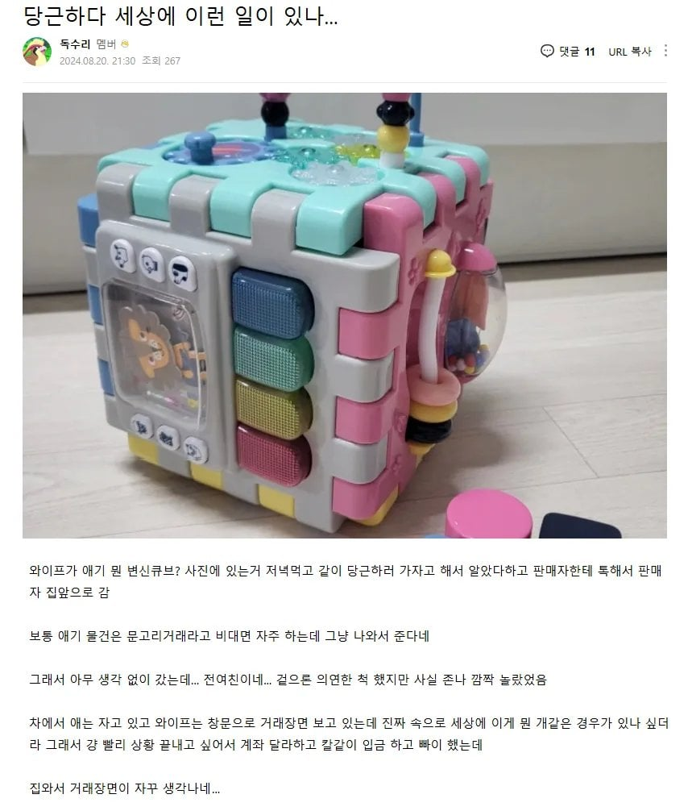
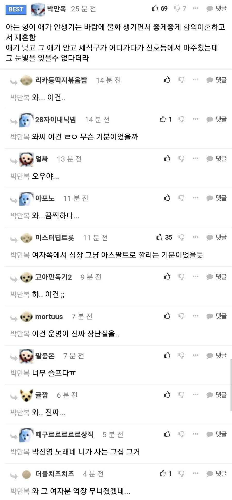

두번째 썰은 못 웃갰다


두번째 썰은 못 웃갰다
두번째는 사는지역도 같았나.. 와씨..
진짜 두번째는 마음 졸라 슬프겠다....
근데 반대로쳐서 남자쪽에서 임신불가한 몸이여서 이혼했다 마주쳤어도 똑같긴 하고...
나는 아이 노력하고 아이 안생기면 어쩔수 없는거니까 둘이 행복하게 살자고 미리 말해놨는데
두번째 썰을 보니까...
운명의 장난이라는 말이 실감된단 말이지..
두번째 썰 잘 이해가 안 되는데
여자가 자기가 문제 있어서 애 못 낳는거라는 생각이 들어서 억장이 무너졌다고 보면 되는 거?
집사람이 얘기 해줬는데, 아이를 원하는데 아이가 안생기는 여자들은 타인이 아기와 유모차끌고 외출하는 모습만 봐도 부들부들 하는 사람이 있다고 하더라...
ㅇㅎ... 안타깝네...
두번째썰은 개인적인 생각으로는 그냥 남녀 둘이 유전학적으로 잘 맞지 않아서 나타나는 문제가 아닐까 싶은데..
응 아니야
일단 결혼하는 나이 자체가 엄청 올라간것도 그렇고, 자연임신이 힘든 사례가 많이 늘었다고 생각됨. 집사람이랑 자궁근종 생긴건 아닌지 검사받으러 산부인과 함께 간적있는데, 애도 없는데 자궁근종 수술하러온 젊은 여자들 꽤 많았음. 그 병원이 자궁근종을 좀 잘보는곳이라.. 자궁근종 수술하거나 색전술하거나 근종상태가 안좋으니 수술이나 시술하는건데, 자궁근종 심하면 일단 자연임신 어렵다고 하더라고. 식습관/생활패턴 변화로 자궁근종 발생도 많이 늘었다고 하고. 근종심한 사람은 자궁적출하기도 함.
괜히 미드에서 애들 납치하는 싸패녀 나오는게 아니구나…..
전처 입장에서는 억장이 무너지는 느낌인거지...
내가 애만 낳았어도 저 행복한 가정의 모습은 내꺼였을텐데...
저남자 옆에서 웃고있는 여자의 자리도 내자리였을텐데...
그날 밤 잠도 못잤을듯
천국에서 내린 비라는 노래가 살짝 생각나네
띵곡
보통은 걍 주작썰임
저런 이벤트가 아예 일어날 가능성이 0%인 일이다 라고는 못 해도
뭐 스타필드같은데서 마주치는것도 아니고 진짜 천문학적으로 드물 일임
말에 근거가 하나도 없이 그냥 주작 주작 에휴
어허! 다른 개붕이들은 몰라도 높은 지능을 가진 나님은 날카롭게 지적하신다는데 어디 태클을!
뭐 모든 사람이 서울에서 사는 것도 아니고 지방에서 살면 은근 자주 마주침
나가서 놀다가 전여친 본적없음?
혹시 누가 마술 보여주면 어떻게든 트릭을 찾아내서 혼자 우쭐대는 성격이야?
결혼후 전여친 두명 마주침.
1. 코스트코 가서 애 잡으러 뛰어다니는디 옆에서 익숙한 목소리가 들려서 보니 전전여친
2. 다른 회사에 업무 미팅 하러 갔는데 나온 상대가 전여친
세상 좁다.
결혼전에도 각각 다른 전여친들 용산역, 번화가 등등에서 우연히 마주친적 있어.
충분히 가능한 썰이라고 본다.
난 술집에서 마주친 정도였는데 업무 미팅에서 만나다니... ㅎㄷㄷ;;; 첨부터 동종업계 만났던거야?
아니 이종업계고 여행가서 알게된거였음.
결혼식 같은데서 마주치는거는 카운팅도 안함.
겹지인이 있으먼 볼 확율 높으니
당연히 서로 모르는척 하고 미팅하고 업무는 자연스럽게 드랍됨.
아무튼 한국, 특히 서울은 넓지만 좁아.
군대 선임이 여친의 절친 남친 이어서 제대하고 우연히 다시 보게 된 적도 있고
나한테만 이런 우연이 있는건 아닐테니... 누구나 다 한두번은 겪지 않을까 싶다.
나 친구 결혼식 갔다가 대학교때 사귄 여친이 다른사람 결혼식 온거 같은식장이라서 마주친적있는데
뭐만하면 주작무새 븅
난 전여친. 전전여친이
한명은 오산살고 한명은 강릉살앗었는데 둘다 간호사고
헤어지고 한참뒤에 한 4년뒤?
어쩌다 카페에 갔는데 둘이 같은자리에 앉아있더라고
시발 그냥 모른척하고 있다가 나가긴했는데
너무 궁금했음 ㅋㅋ 뭐지???? 세상일 모르는겨
나는 몇년전 여친을 지인 결혼식서 봄 ㅋㅋㅋ
비슷한 지역 살면 한번쯤은 가능할법도한데
서울에서도 타부서 사람 가족 다니는거 본적도 있는데
저거 애가 정말 잘 가지고 논다 ㅋㅋ
내 친구도 오래 동거하고 어른들끼리도 자주 왕래하고 그러다 결혼 며칠 전에 파혼했는데 여자가 몇달만에 딴남자랑 결혼하고 애낳았음.
친구가 뒷내용은 부모님한테 말 안하고 있었는데
친구 어머님이 마트에서 일하시는 중에 그 여자랑 딱 마주침. 어머님 어머님 거리던 여자가 웬 애를 안고 모르는 척 카드 내미는 모습에 충격 많이 받으셨다드라.
저거 때문에 멀쩡한 직장 그만둘수도 없고. 제발 불행하길 빈다는데 볼 때마다 애는 커있고 행복하게 사는거 같다 함..
두번째는 실화일까?
유부남으로서 아이 안생긴다고 와이프랑 갈라선다는게 상상이 안가는데 ㅋㅋ
저거 장난감 ㄹㅇ 어딜가나 있는듯
나도 아내가 당근으로 산 물건 받으러 나갔다가
형님(아내의 오빠)의 전여친 만난적 있다.
전여친이 장모님 가게에 혼자 놀러갈 정도로
아내 집에 너무 살갑게 잘했고
딱 한번이지만 아내와 내가 동거하고 있던 집에 와서
잠도 자고 갈 정도로 친하게 지내서
결혼할 줄 알았는데...
전여친이 바람나서 헤어졌었음
현관문을 열고 나오는데
어...어디서 본 얼굴인데....하고 속으로 생각했는데
어버버 하다 물건받고 돌아서서 생각하니
형님 전여친이란게 생각났다
아내에게 거래자 이름 물어보니 맞더라
너무 예쁘고 싹싹해서 만날때마다 싱숭생숭 했었는데...
좁은 세상..
갑자기 중식이 노래 생각나는 주제네.
https://youtu.be/DQJ-SOFlmTk?si=oJOAnpLxhdfhmiWT
어디서~~ 뭘하던지 잘 살았으면 조켔쏘~~~
노력해도 안 되는건 욕하지 말자. 소주까고 울고말지
로 도 로 라 다
진짜 우리나라는 생각보다 좁은 나라야
다른 이야기지만 언제 어디서 누굴 만날지 모르기 때문에 죄짓지 말고 폐끼치지 말고 겸손하게 살아야한다고 생각 함
동사무소인가 시청이었던가 여권받으러갔는데 전에 만났었던 여친이 있었는데 서로 눈 마주치고 2초? 가만히 서있었음 세상 좁다
두번째는 자기 책임이 아닌 줄 알았는데
자기 책임이라는 증거를 너무나 확실히 알아버려서
더 속상했었다고 볼 수 있겠네
임신 안한다고 이혼하는것도 웃김
짧게 얘기하려고 임심이 안되서라고 축약한 내용이 많은 거 같은데
애새끼 마인드
슬프네 ㅠㅠ
난 내옷중에 가장 그지같은 옷입고 머리 빡빡민날 치킨집에서 전여친 만났는데 심지어 몰랐다가 그날 똥싸면서 갑자기 생각나더라 측은한 그 눈빛ㅋㅋㅋㅋ ㅅㅂ 왜 쳐다보나 했었는데
두번째는 슬프네...